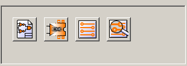

Создайте рабочую директорию для проекта (используя kicad или другим способом).
В этой
директории используйте kicad для создания
файла проекта (файл .pro)
через
 иконку.
иконку.
Менеджер проектов - kicad
2.3 - Windows версии: установка
2.4 - Установка предопределенной конфигурации
Пакет Kicad - это группа программ для создания электрических схем и разводки, который работает на следующих операционных системах:
LINUX
Windows XP/2000
Утилита kicad - это менеджер проекта, который упрощает использование других программ, необходимых для рисования электрических схем, компоновки плат (PCB), генерации и проверки файлов для производства.
Программы, которые включены – это:
Eeschema: редактор схем.
Pcbnew: PCB редактор.
Cvpcb: позволяет ассоциировать компоненты схемы с физическими модулями (наборами) для размещения на PCB.
Gerbview: используется для визуализации файлов Gerber.
Рекомендуется установить вашу видеокарту на работу с 24 или 32 битами на пиксель.
Режим 16-битовый работае с Eeschema, но в Pcbnew дисплей не будет работать корректно под Linux в этом режиме.
Это стандартно и рекомендованная практика (хотя не строго обязательно) размещать структуру директории kicad под /usr/local. Другие варианты размещения установки вполне возможны, но если KiCad не сможет найти библиотеки или другие файлы, всегда будет идти обращение к директории /usr/local/kicad.
Войдите в сессию, как root .
Скопируйте файл kicad.tgz в директорию /usr/local. Также возможно использовать файл kicad.zip (в этом случае потребуются дополнительные установочные шаги, описанные ниже).
Выполните команду: tar zxvf kicad.tgz (или unzip kicad.zip). Будут созданы директория kicad, ее поддиректории и файлы.
Дополнительно поправьте файл /etc/profile (или какой-либо стандартный файл конфигурации вашего дистрибутива Linux – возможно, /usr/.profile), с целью добавить к строкам PATH путь к бинарным файлам Eeschema (/usr/local/kicad/linux). Не используйте символьные ссылки, поскольку Eeschema нуждается в знании реальных путей в последовательности отыскания других файлов (предопределенная конфигурация, файлы online помощи, ...)
Возможно будет необходимо/желательно
изменить права доступа к файлам. По
умолчанию файлы разрешено читать и
выполнять, но запись разрешена только
для пользователя - root.
Если
для установки использовался файл
kicad.zip, будет
необходимо сделать исполняемыми
следующие 5 файлов:
kicad, pcbnew,
eeschema, cvpcb, gerbview и wyoeditor текстовый
редактор в директории kicad/linux (команда:
chmod +x kicad).
Eeschema использует функциональные клавиши с F1 по F4 (для масштабирования просмотра). Их нельзя переопределить. В сессии KDE используйте меню конфигурации KDE, чтобы удалить эти переопределения, если функции zoom не активируются.
Примечания :
Любые модификации profile или .profile будут эффективны только после смены сессии.
В KDE возможно создать иконку запуска менеджера проекта kicad. Предпочтительно запускать менедежер проекта, а не Eeschema напрямую, чтобы проявились функции управления проектом (бинарные файлы kicad расположены в /usr/local/linux). Наипростейший способ это скопировать
/usr/local/linux/kicad.desktop на рабочий стол.
Скопируйте директорию Kicad и ее поддиректории на диск по вашему выбору ( C:, D:, ... )
Создайте
иконку для запуска менеджера проекта
kicad.exe.
Предпочтительнее запускать
менеджер проекта, а не Eeschema напрямую,
чтобы проявились функции управления
проектом kicad. Бинарные файлы kicad
расположены на диск:\kicad\winexe\, где
диск это диск
установки (C:, D:, ...)
Примечание 1 :
EESchema может быть установлена на сервере и использована с клиентского компьютера без проблем (это было исходной целью разработки).
Примечание 2 :
Удаление программы тривиально – достаточно удалить директорию kicad и иконку запуска.
Файл предопределенной конфигурации (kicad.pro) располагается в kicad/template. Он используется в качестве шаблона для каждого нового проекта. Он может быть модифицирован или добавлен, если необходимо, как правило, к списку библиотек для загрузки. Запустите Eeschema через kicad или напрямую (Linux команда: /usr/local/kicad/linux/eeschema). Измените конфигурацию, а затем сохраните ее в /usr/local/kicad/template/kicad.pro
В порядке упрощения управления проектом, то есть, всеми составляющими файлами (представленными схемами, распечатками платы, дополнительными библиотеками, полученными файлами для фототрассировки, сверления и автоматического размещения компонент), рекомендуется создать project:
Создайте рабочую директорию для проекта (используя kicad или другим способом).
В этой
директории используйте kicad для создания
файла проекта (файл .pro)
через
 иконку.
иконку.
Строго рекомендуется использовать одно имя для проекта и его директории.
Kicad создает файл с расширением .pro, который содержит ряд параметров, относящихся к управлению проектом (таким, как имя файла принципиальной схемы, списка библиотек, используемых в схеме и PCB). Предопределенные имена как принципиальной схемы, так и схемы расположения базируются на имени проекта. Таким образом, если проект, названный example был создан в директории, названной example, созданные по умолчанию файлы будут:
|
example.pro |
Файл управления проектом. |
|
example.sch |
Файл принципиальной схемы. |
|
example.brd |
Файл расположения элементов. |
|
example.net |
Файл netlist (список соединений). |
|
example.xxx |
Различные файлы, созданные другими утилитами. |
|
example.cache.lib |
Кэш - файл библиотек, использованных при создании схемы (backup использованных компонент) |

Основное окно состоит из окна дерева проекта, панели с кнопками запуска различных утилит, и окна сообщений. Меню и инструментальная панель могут быть использованы для создания, чтения и сохранения файлов проекта (*.pro).

Клавиши относятся к следующим командам:
|
|
Запустить Eeschema |
|
|
Запустить Cvpcb. |
|
|
Запустить Pcbnew. |
|
|
Запустить Gerbview. |
|
|
Двойной щелчок по
Двойной щелчок по
|
|
|
Создается файл конфигурации нового проекта. Если шаблон kicad.pro найден в kicad/winexe или kicad/linux, он копируется в рабочую директорию. |
|
|
Открывается имеющийся проект. |
|
|
Обновляется (сохраняется) текущая конфигурация. |
|
|
Создается zip архив всего проекта (файлы схем, библиотеки, pcb и т.д.). |